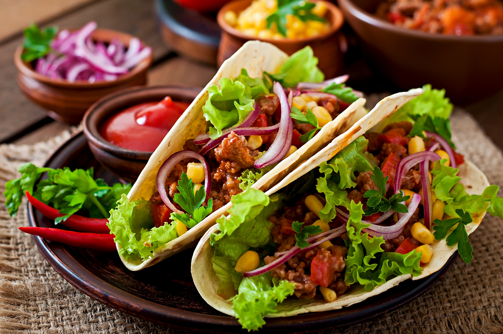

Mexican Tacos
Home

Description
Chicken tacos are soft or crispy tortillas filled with seasoned grilled chicken,
fresh veggies, and zesty sauces for a bright, flavorful bite.
- Ingredients
- 2 cups cooked shredded chicken (rotisserie or boiled)
- 1 tbsp olive oil
- 1 small onion, finely chopped
- 1 clove garlic, minced
- 1 tsp chili powder
- 1 tsp ground cumin
- ½ tsp paprika
- Salt & pepper to taste
- 8 small tortillas (corn or flour)
- 1 cup shredded lettuce
- 1 tomato, diced
- Fresh cilantro, chopped
- 1 lime, cut into wedges
- Salsa, hot sauce or sour cream (optional)